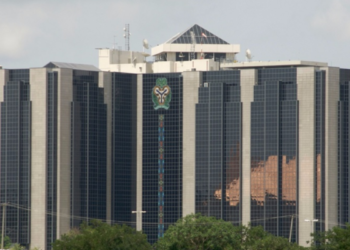

Nigerian businesses list insecurity as the biggest constrain in July- CBN survey
Economic Highlights
US Fed has signalled its time to cut interest rates; Here is what it means for Nigeria’s exchange rate

Remittance inflows surge by 130% to $553 Million in July 2024 – CBN
>Bank offers: Don’t invest if you can’t wait for 5 years, Chika Mbonu advises investors Bank offers: Don’t invest if you can’t wait for 5 years, Chika Mbonu advises investors